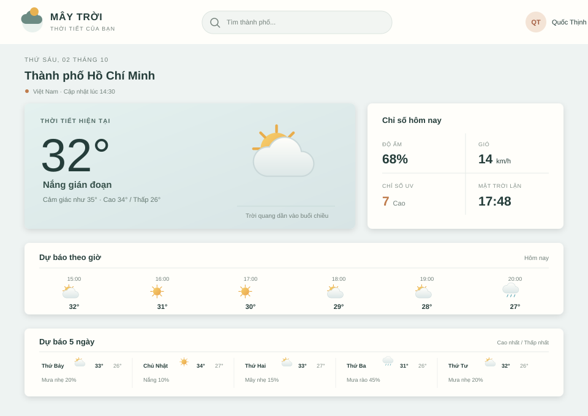

Dự án 02
Trang tra cứu thời tiết
Giao diện tĩnh mô phỏng một ứng dụng thời tiết, tập trung vào việc trình bày nhanh thông tin hiện tại và dự báo trong ngày bằng bố cục trực quan.

Thông tin dự án
Mục tiêu
Tạo một màn hình thời tiết dễ quét thông tin: nhiệt độ và trạng thái hiện tại được ưu tiên, còn dự báo theo ngày được đặt thành các mục liền nhau để người xem so sánh nhanh.
Cách thực hiện
Dùng HTML để chia cấu trúc thành khu vực thông tin hiện tại và dải dự báo. Flexbox sắp xếp các mục dự báo, kết hợp khoảng cách, màu sắc và biểu tượng để phân cấp nội dung.
Công nghệ sử dụng
-
Cấu trúcHTML5
-
Bố cụcCSS3, Flexbox
-
Trọng tâmTrình bày dữ liệu
HTML5CSS3FlexboxResponsive